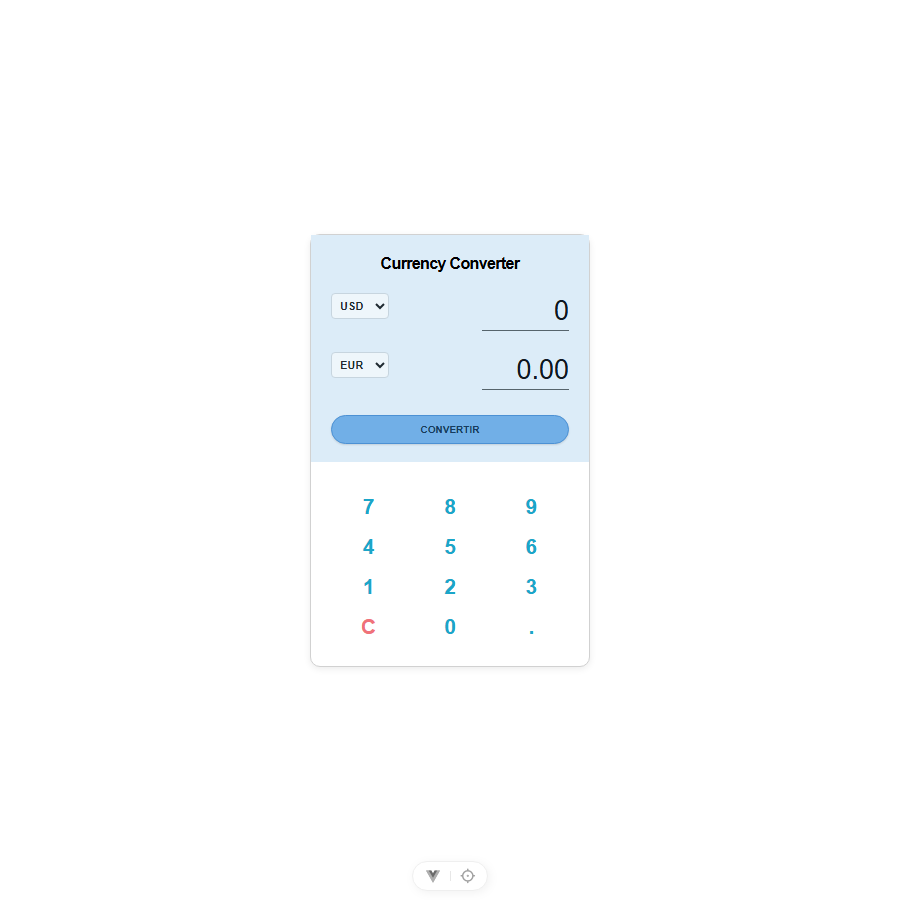
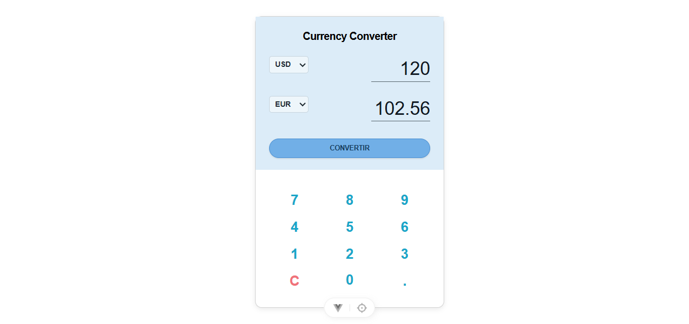

Compte rendu du projet Vue.js
Dans ce projet, j'ai réalisé une petite application qui permet de saisir un montant, de choisir deux devises et d'obtenir directement le résultat. J'ai essayé de rester proche de la capture du sujet avec une carte simple, une zone bleu pâle et un clavier numérique.
J'ai choisi une structure compacte pour ressembler à la maquette. La partie du haut contient les deux listes, le montant, le résultat et le bouton CONVERTIR. En dessous, j'ai placé le clavier dans l'ordre demandé : 7, 8, 9, puis 4, 5, 6, puis 1, 2, 3, et enfin C, 0, .


J'ai gardé App.vue très simple : il affiche le composant CurrencyConverter.vue. Toute la logique de l'interface est dans ce composant. J'ai mis les devises et les taux dans src/data/taux.ts pour pouvoir les retrouver facilement et avoir des taux de secours.
Pour faire le calcul, j'utilise des taux exprimés par rapport à l'euro. La formule utilisée est la suivante :
Par exemple, avec les valeurs du sujet, 120 USD donnent 102,56 EUR. Grâce à la réactivité de Vue, le résultat se met aussi à jour quand je change le montant ou une devise.
La principale difficulté a été de reproduire une interface assez petite tout en gardant des boutons faciles à utiliser. J'ai donc séparé le composant et le fichier des taux pour que le code reste compréhensible.
J'ai aussi rencontré le problème de l'API : elle peut ne pas répondre ou être bloquée par le navigateur. Pour éviter que l'application ne tombe en panne, je garde des taux fixes dans le projet. La conversion fonctionne donc même sans connexion.
Pour finir, j'ai utilisé le contrôle TypeScript et le build Vite. La commande npm run build vérifie que le code est correct et prépare la version de production.